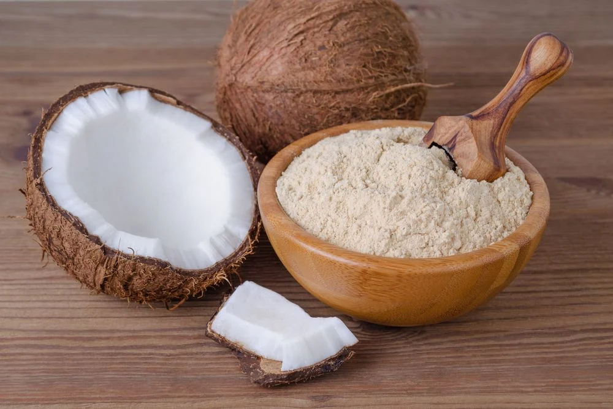

Home
Receita Farinha de Coco

Ingredientes
- Ingredientes
- 1 coco seco
- 600 ml de água morna
Modo de Preparo
- Quebre o coco ou já compre-o partido (há lugares em que a polpa do coco seco é vendida separadamente).
- Corte a polpa em pedaços e bata com a água morna no liquidificador ou processador.
- Coe numa peneira fina ou num tecido limpo e fino: o líquido é o leite de coco.
- A polpa que sobrou na peneira ou tecido é farinha: coloque-a na frigideira em fogo médio por 15 minutos, sempre mexendo.